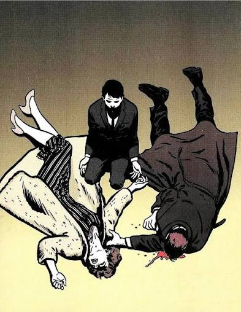

The Batman is one of the most infuential superheroes in all of history, Yet it seems that many do not understand his charcter or what he stands for. Batmans trues identity is Bruce Wayne. When he was a boy, his parents were murdered infront of him in an alley way after he insited that they should leave. From that moment onwards, Bruce truly never got past that day. He was forever that 8 year old boy that night.

He would later grow up, study abroad, learn every kind of martial arts he could, and eventually came back to gotham to try and make it a better place, so that one day people would no longer feel the pain he felt that day and continues to feel every day. Batman is a very intelligent man. He is often described as the smartest in the world and his body also keeps up with his mind. As a superhero with no powers he had too fully tone in his body as well as he could in order to keep up